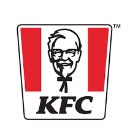
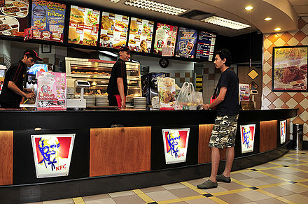
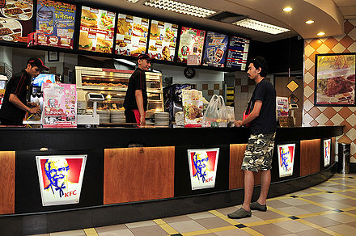

KFC was founded by Colonel Harland Sanders, an entrepreneur who began selling fried chicken from his roadside restaurant in Corbin, Kentucky during the Great Depression. Sanders identified the potential of the restaurant franchising concept and the first "Kentucky Fried Chicken" franchise opened in Utah in 1952. KFC popularized chicken in the fast-food industry, diversifying the market by challenging the established dominance of the hamburger. By branding himself as "Colonel Sanders", Harland became a prominent figure of American cultural history and his image remains widely used in KFC advertising to this day. However, the company's rapid expansion overwhelmed the aging Sanders and he sold it to a group of investors led by John Y. Brown Jr. and Jack C. Massey in 1964. KFC was founded by Colonel Harland Sanders, an entrepreneur who began selling fried chicken from his roadside restaurant in Corbin, Kentucky during the Great Depression. Sanders identified the potential of the restaurant franchising concept and the first "Kentucky Fried Chicken" franchise opened in Utah in 1952. KFC popularized chicken in the fast-food industry, diversifying the market by challenging the established dominance of the hamburger. By branding himself as "Colonel Sanders", Harland became a prominent figure of American cultural history and his image remains widely used in KFC advertising to this day. However, the company's rapid expansion overwhelmed the aging Sanders and he sold it to a group of investors led by John Y. Brown Jr. and Jack C. Massey in 1964.
Trading hours
- Mon-Fri : 08:00h - 18:00h
- Sat : 07:00h - 21:00h
- Sun : 09:00h - 10:00h